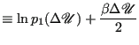
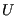
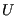

Next: Histogram Reweighting Up: Free Energy Methods Previous: Thermodynamic Integration
One interesting feature of the Widom method is that the only trial move is insertion; however, the free-energy difference between an  -particle system and an -particle system should not depend on which direction the trial moves take. If we imagine a “Widom real-particle removal” method, we'd write the chemical potential as
-particle system and an -particle system should not depend on which direction the trial moves take. If we imagine a “Widom real-particle removal” method, we'd write the chemical potential as
| (327) |
Sampling in a straightforward NVT MC simulation won't work, however, because...
There is, however, a right way to use bidirectional energy changes to compute free-energy differences, termed the “overlapping distribution method” and attributed to Bennett [44].
Consider two systems 0 and 1, obeying potentials
 and
and
 , respectively. Let be the scaled configurational integral of the Boltzmann factor:
, respectively. Let be the scaled configurational integral of the Boltzmann factor:
| (328) |
We can then express the free energy difference between these systems as (assuming for simplicity they have the same volumes):
| (329) |
Consider next we run an NVT MC simulation on
 and sample
. Formally, the probability density of
and sample
. Formally, the probability density of
 from this simulation is
from this simulation is
| (334) | ||
| (335) |
Bennett[44] suggests the following transformation of and to permit easy calculation of . Letting
| and | (336) | |
|  | (337) |
| (338) |
Suppose we now take the example of system 1 with  real particles and system 0 with
real particles and system 0 with  real particles and one ideal-gas particle. The free-energy change from 0 to 1 is the excess chemical potential (yet again!). Fig. 41 illustrates using Bennett's method to compute
real particles and one ideal-gas particle. The free-energy change from 0 to 1 is the excess chemical potential (yet again!). Fig. 41 illustrates using Bennett's method to compute
 of the Lennard-Jones fluid at
of the Lennard-Jones fluid at  = 1.2 for a few different densities. For each density, two simulations were run: simulation-0 computes the distribution of
= 1.2 for a few different densities. For each density, two simulations were run: simulation-0 computes the distribution of
 , the energy associated with converting the ideal-gas particle to a real particle, while simulation-1 computes the same distribution for converting a randomly chosen particle from being an ideal-gas particle to being a real particle. This latter
, the energy associated with converting the ideal-gas particle to a real particle, while simulation-1 computes the same distribution for converting a randomly chosen particle from being an ideal-gas particle to being a real particle. This latter
 is easily computed using the single-particle energy function
is easily computed using the single-particle energy function e_i. It is important to note that the direction of the  is from ideal-gas to real for both simulations. Note too that since we sample
for particle insertion in simulation-0, we can just as easily compute the expectation
and thereby get a direct estimate of
.
is from ideal-gas to real for both simulations. Note too that since we sample
for particle insertion in simulation-0, we can just as easily compute the expectation
and thereby get a direct estimate of
.
At the moderately low density of  = 0.7, we see a clear constant offset
between and . Note clear agreement between the offset over a finite-size domain of
 and the single-point Widom estimate. For the somewhat higher density of 0.9, the offset is a bit noisier, reflecting somewhat poorer sampling. For the highest density, the sampling in simulation-0 is so poor that it is nearly impossible to detect an overlap domain.
= 0.7, we see a clear constant offset
between and . Note clear agreement between the offset over a finite-size domain of
 and the single-point Widom estimate. For the somewhat higher density of 0.9, the offset is a bit noisier, reflecting somewhat poorer sampling. For the highest density, the sampling in simulation-0 is so poor that it is nearly impossible to detect an overlap domain.
|
|
cfa22@drexel.edu